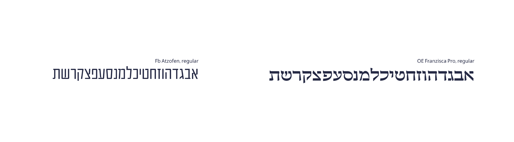
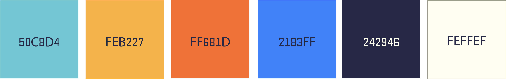
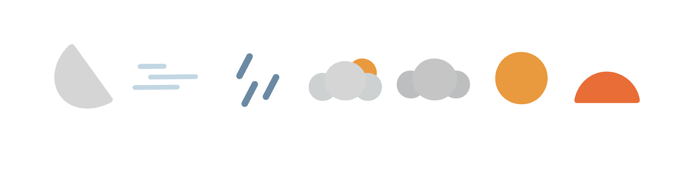

Now

about
The app creates a connection between climate, emotion, and food, providing users with culinary content and recipes tailored to the current atmospheric conditions.
research
As part of the research process, I analyzed interviews with Eyal Shani which served as the foundation for the app’s copywriting, aiming to build a unique tone of voice that breaks away from generic weather forecast language.
In parallel, I identified four prominent characteristics of his persona that formed the basis for the design system:
Rawness: Simple cooking with few spices, eating with hands or over cardboard.
Folklore: Granting “high-status” to street food.
Respect for the ingredient: An emotional admiration for basic raw materials and the belief that they have a soul and essence that must be revealed through cooking.
Poetic language: Describing food in philosophical and emotional terms, treating food as art.
In parallel, I identified four prominent characteristics of his persona that formed the basis for the design system:
Rawness: Simple cooking with few spices, eating with hands or over cardboard.
Folklore: Granting “high-status” to street food.
Respect for the ingredient: An emotional admiration for basic raw materials and the belief that they have a soul and essence that must be revealed through cooking.
Poetic language: Describing food in philosophical and emotional terms, treating food as art.

user flow

the challenge
-Translating meteorological data into an emotional experience in a digital interface.
-Building a design system that represents a colorful character while maintaining a raw, minimalist aesthetic.
-Building a design system that represents a colorful character while maintaining a raw, minimalist aesthetic.
the solution
-Typography-focused design: Changing the information hierarchy common in weather apps. Cleaning up complicated graphs and replacing them with large, unique font and copywriting to turn dry data into a poetic story.
typography

colors

icons
